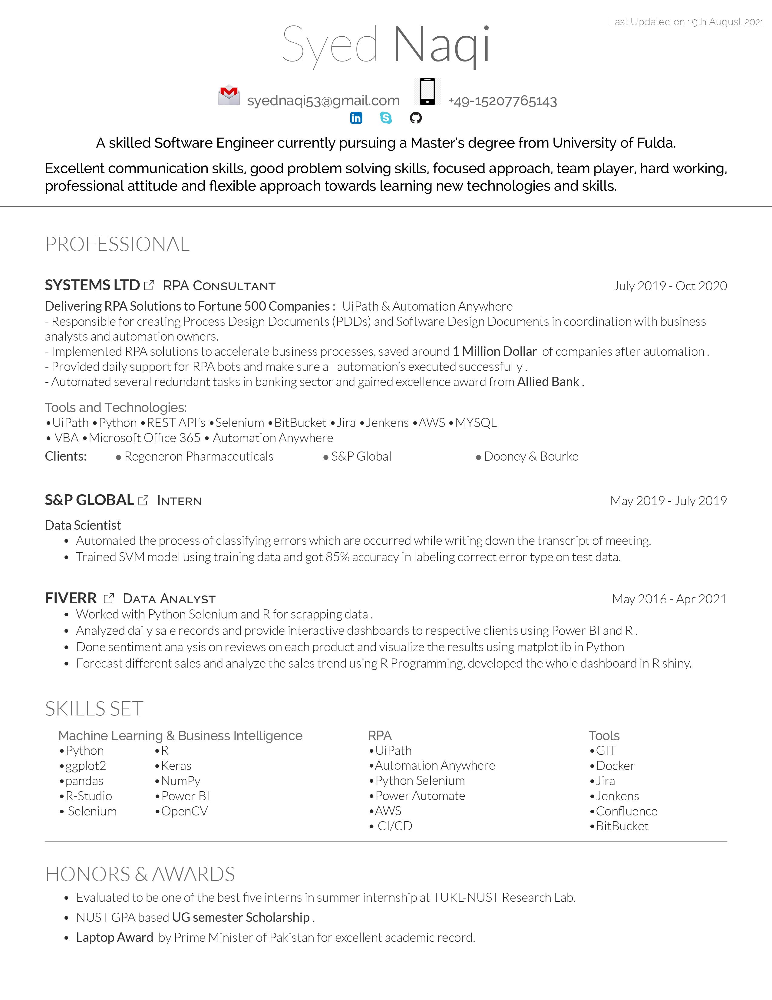
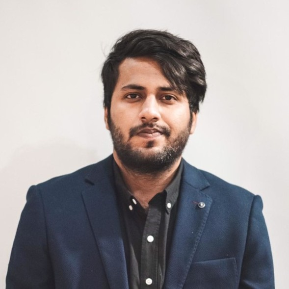

Intro
Master's student at the University of Fulda. Hands-on experience with UiPath and Automation Anywhere.
During my bachelor tenure, I worked on different projects like one of them is related to Sentimental analysis of tweets which helps to predict the stock prices.
Worked in the area of Automatic Speech Recognition as an intern in TUKL-NUST (one of the finest AI Research Lab). By the way, check out my detailed work experience.
Work

About

My full name is Syed Naqi Raza Bukhari, I did my Bachelor's in Computer Science from National University of Sciences and
Technology (NUST) Pakistan. During my Bachelor's tenure I worked on couple of interesting projects like Predicting Super Mario
Game levels through LSTM Machine Learning Model. After graduation, I worked as an RPA Developer with a top consultancy company in
Pakistan. After working for 1.5 Years, I came to Germany for perusing my masters
Contact